Based in Rochester, NY
📄 View ResumeConnor
Gelabert
I’m Connor Gelabert, a supply chain and procurement professional with experience across both direct and indirect sourcing. I specialize in buying, contract negotiation, and building strong, results-driven supplier relationships.
In my current role as a Senior Procurement Associate in the mission-critical communications sector at L3Harris, I manage the procurement of audio and user interface components that are integrated directly into products supporting American and allied warfighters.